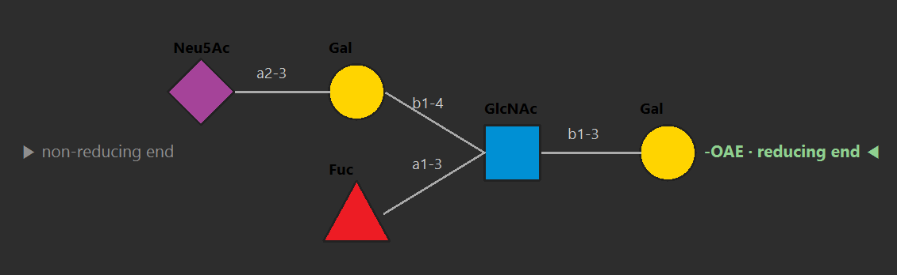
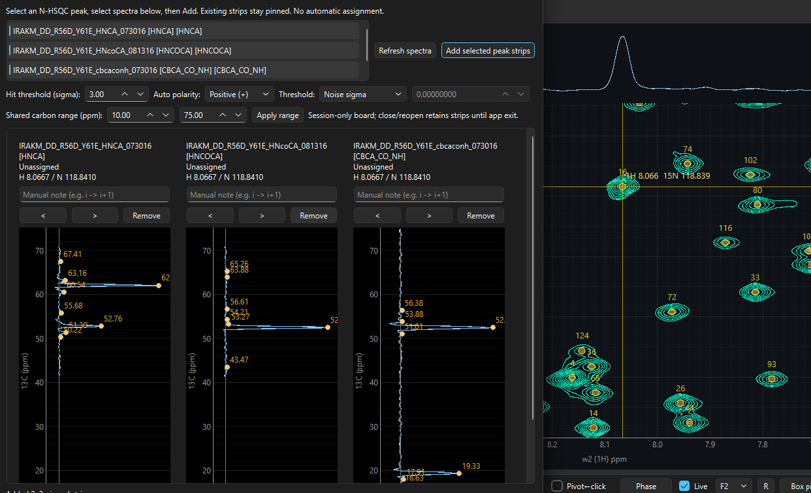

INTER-SCAN · NS = 3while the magnet settles, watch
NMR Studio — a workbench for 1D, 2D, 3D and dynamic NMR. It opens the data you already have, fits what moves, and proposes protein and glycan assignments for you to review. Your AI agent can drive it file-first, through a local AI server.
Everything Resona does, one line per module — plain words, no brochure. Your AI client can reach each of these too.
PK 07 is flagged as the flagship. It earns it further down the page, at δ 4.70.
Bruker pdata, NMRPipe FT, Sparky .ucsf — just open them. Nothing is ever written back into your folders.
BRUKER · NMRPIPE · UCSFRaw FID to phased spectrum: apodize, transform, phase — autophase included — then set your reference and go.
FT · PHASE · REFERENCEAuto picking in any polarity, multiplet patterns, deconvolution, and J values quoted as honest intervals — never a bare number.
AUTO-PK · J · ∫Contours, strips, projections and 3D cubes. This is where the 2D work happens.
CONTOURS · STRIPS · LINKVT lineshapes, titration Kd, T₁/T₂/T₁rho — each fit comes with its report, so you can see what the number stands on.
VT-FIT · Kd · T₁/T₂Your triple-resonance set walked, scored and linked — then handed to you for approve-or-hold. (Details at δ 3.62.)
BACKBONE · YOU CONFIRMHSQC, TOCSY and HMBC read together against measured shifts — SNFG cartoons, mixtures, qNMR. (Home turf at δ 4.70.)
HSQC · TOCSY · HMBCConversion and processing without leaving Resona — Windows via WSL2, native on Mac and Linux. Uses your own Pipe install.
UI · WSL2 · NATIVENMRSim fit inputs prepared here for the TopSpin side — scripts and templates, composed and editable.
FITS · TEMPLATESClaude, Cursor, any AI client — 55 tools through a local server, with manuals it reads itself. It prepares; you confirm.
AI AGENTS · 55 TOOLSMost software asks you to convert or re-process before you may look. Resona reads processed Bruker pdata, NMRPipe FT files and Sparky .ucsf projects as you saved them — read-only, nothing is ever written back into your source folders — and then gets out of the way.
The processing dock turns raw Bruker FIDs into phased spectra; picking runs in positive, negative or both polarities; multiplets are classified and deconvolved against a kernel measured on the same spectrum; and in 2D and 3D, strips and projections follow your peaks across experiments.
Three dynamic-NMR instruments in the DNMR menu, wired to the same engines your AI client calls. These are small working models — drag, and the fit follows.
THE FLAGSHIP

—Glycan spectra are dense, overlapped, and unforgiving of guesswork — linkage and composition shift everything. Resona answers with evidence fusion: HSQC anchors, prediction-free TOCSY spin systems, a DUAL ring walk with HMBC bond votes, all scored against a measured-shift library with linkage increments and neighbour corrections. Your own measurements outrank the built-ins, and anything tied stays “?” for review.
Protein assignment in Resona mechanises the strip reading you would do by hand — one spin system per HSQC root, carbon strips read in every bound 3D, systems scored at every sequence position and linked into chains by carbons that must agree in two strips. Weak evidence produces abstained, never a guess.
Predictions are a bounded prior, not a tolerance: leave the field empty and the bundled POTENCI random-coil predictor fills N/H/C/HA/HB (a user CSV always wins — and a structure-based CSV is the biggest accuracy lever). Placed rows become labels only through the review gate: approve or hold each candidate, preview the bindings, apply tentative labels, undo any time.

Resona doesn't replace NMRPipe. It makes it pleasant to live with.
Conversion and processing (fid.com / proc.com) with interactive P0/P1 and exact REDRAW re-runs, plus the nlinLS lineshape table flow — scripts editable, every command echoed to the terminal pane. Bring your own NMRPipe; Resona finds it and drives it.
Windows runs through WSL2 + tcsh; macOS and Linux run natively. No Pipe is ever bundled.
NMRPipe, driven from Resona.
If you use an AI client — Claude Desktop, Cursor, or anything speaking MCP — it can run Resona for you. A small local server exposes 55 file-first tools that reach the same engines as the GUI: pick, deconvolve, integrate, VT/titration/relaxation fits, protein and glycan assignment, NMRPipe runs, batch and report writers.
Your AI reads the Markdown manuals on connection and learns the parameters itself. It reads and previews freely; applying labels needs your explicit go-ahead in chat — and everything runs on your machine, your spectra go nowhere.
“Open the glycan HSQC and assign it. Then fit the VT series and write me a report.”
// claude_desktop_config.json — point at the installed server, not the GUI exe { "mcpServers": { "resona": { "command": "C:\\Users\\you\\AppData\\Local\\Resona\\mcp\\ResonaMCP.exe" } } }
A fresh calendar wallpaper every month — one δ per month — and a small game for the waits in between: processing, agent jobs, simulations.
Each month carries a different δ section of this page, with the month's calendar and holidays. Pick dark or light, click to download.
Processing runs, the agent works its queue, the simulation spins — meanwhile, fly. A humorous NMR-themed space shooter, free with the site. Opens in a new tab; nothing to install.
Three Windows packages on GitHub — pick by whether an AI agent will drive Resona on that machine. Free for non-commercial use; commercial use needs a licence. macOS dmg and Linux builds are on the way.
Application and the local MCP server together. Take this one if an AI agent will ever drive Resona on this machine.
Application only, no agent server. For machines where no AI agent will ever run. Saves ~36 MB.
The stdio MCP server alone, for a machine that runs the agent but not the GUI. A server, not a program — your AI client spawns it; launching it by hand looks hung, which is correct.
The application by itself. If an AI client will drive Resona on this Mac, also take the server file below.
The local server your AI client spawns. Unzip next to the app and point the client at it — launching it by hand looks hung, which is correct.
The Linux build lands in resona-releases next to the Windows packages. Watch the releases page.